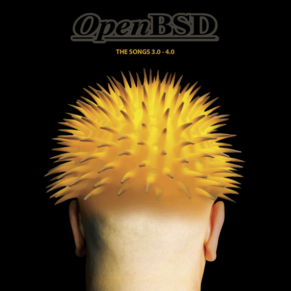

|
OpenBSD 4.9 1. Mai 2011 
|
Alle sechs Monate (um den 1. Mai und den 1. November herum) erstellt OpenBSD
ein offizielles Softwarerelease. Neben dem freien Sofwarerelease auf
den FTP-Servern erstellen wir
Illustrationen und ein Lied, die
mit der Software auf einem CD-Set versandt werden. Der
Verkaufserlös dieser Artikel stellt die Hauptfinanzierung des
OpenBSD-Projektes dar.
Wir halten eine enge Verbindung mit unserem Hauptlieferanten, dem Computer Shop of Calgary, der unsere Produkte weltweit an Kunden per Post oder Kurier verkauft. Weltweite Bestellungen für die neuen (und alten) Artikel können von der Bestellseite des Computer Shop of Calgary aufgegeben werden. |
|
OpenBSD 4.9 *kommt bald 1. Mai 2011 Release-CD
Poster  OpenBSD Songs "3.0 - 4.0"  Kaputzenpullie (schwarz) |
OpenBSD 4.8 Veröffentlicht am 1. November 2010 Release-CD 
Poster  Puffy Tasse  Buch über PF 2nd Edition  |
|
Der Computer Shop of Calgary ist Hauptlieferant des Projektes und hat daher viele der älteren CDs und T-Shirts, zum Beispiel diese und viele mehr ... |


 ... etc.
... etc.
|
|
Postanschrift: Computer Shop of Calgary LTD. Box 267 Milk River, Alberta, Canada T0K 1M0 |
Physische Adresse (nur Kuriere): Computer Shop of Calgary LTD. 104 1st Avenue NW Milk River, Alberta Canada T0K 1M0 |
US-Postanschrift: Computer Shop of Calgary LTD Box 28 Sweet Grass, MT 59484 USA |
Für Kanada addiere zunächst die Mehrwertsteuer oder HST, dann für USA oder Kanada 10 % für den Versand. Füge 20 % für andere Länder hinzu. Mit Ausnahme von T-Shirts oder Büchern, die recht schwer sind, liegen die Versandkosten für unsere standardmäßig gewählte Luftpost bei 30 % oder mehr. Du kannst auch 60 Tage Transport in Kauf nehmen, wenn du stattdessen den langsamen Schiffstransport wählst und dann mit 20 % auskommst - das musst du jedoch in den Kommentaren ausdrücklich mit angeben. Wenn das Ergebnis einigermaßen stimmt, werden wir es annehmen. Sollte es aber stark abweichen, dann werden wir die Differenz zurückzahlen oder um eine weitere Zahlung bitten (was aber nicht den Versand verzögern wird).
Die Kosten für Banküberweisungen außerhalb der europäischen Union liegen normalerweise bei ungefähr 25 $ US oder 25 $ kanadischen Dollar, abhängig von der Ziel- under überweisenden Bank. Wir müssen diese zu den Kosten für die Bestellung hinzufügen; zusätzlich entstehen Überweisungskosten für den Sender.
Wende dich an uns, wenn du die Kosten für eine Versandversicherung wissen willst, Fragen zur Registrierung oder anderen Versandmethoden hast oder die Kosten für eine Großbestellung wissen willst. Schecks oder Bestellungen mit Bargeld können in US-Dollar, Euro oder kanadischen Dollar an die folgenden Adresse gerichtet werden:
|
Postanschrift Computer Shop of Calgary LTD. Box 267 Milk River, Alberta, Canada T0K 1M0 |
Physische Adresse (nur Kuriere) Computer Shop of Calgary LTD. 104 1st Avenue NW Milk River, Alberta Canada T0K 1M0 |
US-Postanschrift Computer Shop of Calgary LTD Box 28 Sweet Grass, MT 59484 USA |
Die Rückverfolgungsnummer-Zustellung und Versicherungskosten für Einzel-CDs, die in die USA gesendet werden, sind kostenlos und in den angegebenen Kosten mit inbegriffen.
Für Kanada beträgt die ,FIRST CLASS'-Versicherung 5 $ CDN. Diese Versicherung kann entweder beim Bestellen (du musst dies in dem Kommentarbereich der Bestellung mit angeben) oder, für 6 $ CDN, kann sie bezahlt werden, nachdem festgestellt werden musste, dass die Ware verloren gegangen ist, und eine Anfrage auf Ersatz gestellt hast. Unglücklicherweise gibt es wie in den USA keinen Rückverfolgungsnummerndienst für ,FIRST CLASS'-Pakete in Kanada. Wenn du eine Rückverfolgungsnummer-Benachrichtigung in Kanada benötigst, muss man auf eine teurere Versandklasse wechseln, die »Express Post« genannt wird.
Pakete, die nach Kanada gesendet werden und mehr beinhalten als eine CD, werden standardmäßig per ,Expedited Parcel' gesendet. Rückverfolgungsnummer-Benachrichtigung ist in den Kosten von 1,20 $ CDN / 100 $ CDN mit inbegriffen. Wenn im Kommentarbereich der Bestellung angegeben wird, dass nicht versichert werden soll, decken wir nur die Hälfte der Paketkosten, so musst du die andere Hälfte übernehmen, wenn etwas über die Post verloren geht. ,Express post', wenn extra angegeben, beinhaltet die Versicherung bis zu 100 $ CDN.
Pakete, die in die USA gesendet werden und mehr beinhalten als eine CD, dazu zählen keine T-Shirts, werden per ,Media mail' aus Sweet Grass, Montana gesendet. Solch ein Versand beinhaltet Rückverfolgungsnummer-Benachrichtigung. Wir fügen ein wenig zusätzliche Versandkosten hinzu, sodass wir selbst den Verlust oder die Beschädigung von Gütern in der Zustellung decken können, wenn keine reguläre Zustellungsversicherung für diese Versandklasse möglich ist. Wir bitten dich nur, die Rückversandskosten in solchen Fällen zu bezahlen.
Pakete, die in die USA gesendet werden und T-Shirts beinhalten, müssen weiterhin aufgrund komplexer Zolldokumente (beschwere dich bei den Lobbyisten der Garment Makers Unions) per Post von Kanada aus gesendet werden. Wenn sie weniger als 1 kg (2,2 lbs) wiegen, werden sie mit ,small packet'-AIRMAL gesendet. Es steht keine Rückverfolgung für diesen Dienst bereit, aber es ist eine Versicherung bis zu 100 $ CDN im angegebenen Preis mit inbegriffen (welcher anhand des Gewichts und des Ziel-Staates variiert). Zusätzliche Versicherung für kleine Pakete ist nicht verfügbar. Für Pakete, die schwerer sind als 1 kg, verwenden wir ,Expedited Parcel', Rückverfolgungsnummer-Benachrichtigung mit inbegriffen, und wir fügen Versicherung für die Versandkosten mit bei; es sei denn wir sollen nicht. Für jegliche Versicherungsfehlbeträge decken wir nur die Hälfte der Kosten und du musst die andere Hälfte selbst tragen. Wenn du Zweifel hast, (falls das zuvor beschriebene schwer zu verstehen ist), gib »FULL INSURANCE« (volle Versicherung) im Kommentarbereich deiner Bestellung mit an. In diesem Fall finden wir einen komplett versicherten Weg für den Versand.
Für den Versand in die USA, nach Kanada und einige andere Länder ist der »Express Post«-Dienst (der eines Tages USA Priority Post wird) immer verfügbar. Wenn wir Express Post (US Priority Post) und von den USA aus versenden können (keine T-Shirts), dann werden wir immer für den kompletten Inhalt garantieren können und fügen die Kosten dem genannten Preis hinzu; es sei denn wir sollen nicht. In dem Fall werden wir nur die Hälfte des Verlustes decken können. Es gibt eine spezielle Möglichkeit für ,Express Post' für Bestellungen aus den USA oder Kanada im Web-Bestellformular. Du musst es nur auswählen. Wir können dies eventuell auch für andere Länder bereitstellen, aber wir werden uns für den besten Versand entscheiden (,registered parcel' mit Versicherung) in Fällen, in denen ,Express Post' nicht möglich ist. Länder mit unzuverlässiger Postverwaltung, zum Beispiel Mexiko, können nicht für Versicherung für jegliche Parcel-Klasse ausgewählt werden, außer für kleine Pakete. Wir können die Bestellung in kleine Teile aufteilen, die dann weniger als 2 kg wiegen, wenn eine Versicherung unbedingt stattfinden muss. Kleine Pakete in Nicht-USA-Länder können bis zu 2 kg wiegen.
In USA/Kanada gehen weniger als 1 % der Waren über den Postweg verloren; doch wer weiß, vielleicht kann es deine sein. Aber wenn du diese Gefahr überhaupt nicht in Kauf nehmen kannst, gib unbedingt ,FULL INSURANCE' im Kommentarbereich deines Bestellformulars im Web an. Wir werden dann auf einen komplett versicherten Weg versenden und alle notwendigen Kosten zum angegebenen Preis addieren.
Pakete werden normalerweise entweder von Milk River, Alberta, Kanada oder Sweet Grass, Montana aus gesendet. Typische LUFTPOST-Versandraten für Stückzahl eins (nur das CD-Set) sind grob geschätzt:
Für andere Bestellungen oder Versandkombinationen sind die Rechnungen zu komplex, um sie hier aufzuführen. Du kannst uns aber vertrauen, dass wir die Versandkosten so niedrig wie möglich halten werden. Wenn das allerdings ein großes Problem für dich darstellt, sende uns eine E-Mail. Hinweis: Die veranschlagte Lieferzeit bezieht die Zeit kurz nach einem neuen Release nicht mit ein, in der die große Menge an Bestellungen dafür sorgt, dass manche Bestellung erst nach ein bis zwei Wochen der Post übergeben wird. Während der restlichen Jahreszeit geschieht das normalerweise ein paar Tage darauf.
Typische Kosten für ,Express Post' (wird in den USA ,Priority Post') für ein einzelnes CD-Set:
Damit die CD schnell geliefert werden kann, wähle einen Kurier oder einen ähnlichen Dienst, der von der Poststelle bereitgestellt wird.
Für einen Kurierdienst, der ähnlich der Post 1 bis 2 Tage benötigt, möchtest du vermutlich NICHT das Internet-Webbestellformular nutzen, sondern stattdessen telefonisch über die »Computer Shop«-Nummer eine Bestellung aufgeben. Wenn du vor 11:00 Uhr (11 AM) Mountain-Zeit anrufst, kannst du das Paket schon am nächsten Morgen haben! Siehe Telefonbestellung (weiter oben).
Wenn die CD mit ein paar anderen Dingen bestellt wird, kannst du z. B. die CD von einem Kurier liefern lassen und die anderen Sachen eben ganz normal. CDs sind nämlich sehr preiswert per Kurier zu verschicken, da wir sie als Dokumente klassifizieren, während T-Shirts und besonders Poster ziemlich teuer sind. Insbesondere bei Postern nehmen wir an, dass es genau das ist, was man will, sag also explizit in den Kommentaren, wenn alles, auch die Poster, per Kurier geschickt werden soll.
Für Kanada oder USA kann man sogar ,use credit card' in die Box eintragen, bei der es courier account number heißt. In diesem Fall geben wir die Kreditkartennummer an den Kurierdienst weiter. Du bekommst dann eine seperate Rechnung von ihnen (selbstverständlich nur für den Versand). Aber es ist besser, wenn du eine Kundennummer bei dem Kurierdienst hast. Wenn wir zu einer Firmenadresse liefern sollen, kannst du ja bei der Firma nachfragen, ob die nicht vielleicht eine solche Kundennummer haben (ruf doch im Zweifel bei FEDEX oder UPS an, falls du dazu noch Fragen hast.
UPS-, Purolator-, DHL- oder Postal-Kurierkostenraten für Stückzahl 1 sind grob geschätzt:
Teillieferungen: Manchmal ist z. B. ein T-Shirt einer bestimmten Größe einfach nicht auf Lager. Wir senden daher manchmal Teillieferungen nicht per Express Post oder Kurier, selbst wenn das gewünscht war. Wenn wir das trotzdem machen sollen, gib es deutlich an.
Linux Systems Labs Australia Pty. Ltd.
[OpenBSD 4.4 nicht mehr auf Lager. Warten auf das 4.5-Release!]
21 Ray Drive
Balwyn North
Vic - 3104
Australia
Tel: +61 - 3 - 9857 5918
Fax: +61 - 3 - 9857 8974
E-Mail: sales@lsl.com.au
Pacific ESI
PO Box 570
(277-279 Broadway)
Broadway NSW 2007
Australia
Tel: +61-2-8571-0847
Fax: +61-2-9692-9623
Email: openbsd-sales@esi.com.au
oder Damian McGuckin - damianm@esi.com.au
Fachbuchhandlung Lehrmittelzentrum Technik & FRIC GmbH
Wiedner Hauptstrasse 13
1040 Vienna / AUSTRIA
Tel: +43 - 1 505 64 52 11
Fax: +43 - 1 505 64 52 90
E-Mail: buch@lmz.at
www.pinguin.at
Order
OpenBSD online!
Frank Linux-Systems
1110 Vienna / AUSTRIA
Tel: +43 1 768 3626
Fax: +43 1 768 6006
E-Mail: produkt@pinguin.at
Open Source Fanshop
OpenBSD-Software, -Shirts und -Poster
Blowfish Unlimited
116 rue du rouet
13008 Marseille
Tel : +33 (0) 6 79 67 12 40
Lehmanns Fachbuchhandlung GmbH
Hardenbergstraße 11
10623 Berlin / GERMANY
Web Ordering Form
Tel: ++49 (0)30 - 61 79 11 - 21
Fax: ++49 (0)30 - 61 79 11 - 33
E-Mail: info@lehmanns.de
ixsoft
Softwareentwicklung und -vertrieb
Bernd Hentig
c/o verion GmbH
Unter den Buchen 22E
D-16244 Schorfheide
Germany
Web Ordering Form
Tel: +49 333 63 - 46 100
Fax: +49 333 63 - 46 109
E-Mail: sales@ixsoft.de
oeko.net
Oeko.neT Müller & Brandt
Werner-von-Siemens-Strasse 4
D-51674 Wiehl
Germany
Web Ordering Form
Tel: +49 2261 979364
Fax: +49 2261 979366
Bochumer Universitaetsverlag GmbH
Querenburger Hoehe 281
44801 Bochum
Germany
E-Mail: info@blaetterwald.net
Tel: +49 234 9719780, +49 234 701360
Fax: +49 234 9719786, +49 234 701230
Open Company / NS3
Via Firenze, 11
30036 - Santa Maria di Sala (VE)
E-Mail: ordini@opencompany.it
Web Ordering Form
Tel: +39 041 5761070
Fax: +39 041 8109910
Mensys BV
Crayenestersingel 65
2012 PG Haarlem
The Netherlands
Tel: 023 5482020
Fax: 023 5482030
E-Mail: info@mensys.nl
URL: www.mensys.nl
Computer Collectief
Sarphatistraat 13
1017 WS Amsterdam
Tel: 020-6223573
Fax: 020-6226668
URL: http://www.comcol.nl/detail/u_opeb.htm
Inferno Nettverk A/S
Oslo Research Park
Gaustadal\351en 21
N-0349 Oslo
Norwegen
E-Mail: larry@inet.no
Tel: +47 2295 8303
Fax: +47 2260 4427
JEPA, Jernej Vodopivec s.p.
Cesta 24. junija 72b
1000 Ljubljana
Slovenija
E-mail: info@jepa.si
Tel: +386 40 831 814
StarTek
Postfach 19
CH-8118 Pfaffhausen
Web-Bestellformular
Tel: +41 44 500 111-0
Fax: +41 44 500 111-2
OpenBSD Europe
Zednax Limited
963 Stockport Road
Manchester
M19 3NP
E-Mail: orders@openbsdeurope.com
Tel: +44 333 444 0160
Bestellungen an die UK und andere europäische Länder
OpenBSD-Produktion wird im Computer Shop of Calgary durchgeführt, der sich in der Stadt Milk River, Alberta befindet und Postbestellungen in die USA sehr schnell bearbeitet.
Softpro Books
Denver, Colorado (Standort)
Bestellungen, die vor 12 Uhr eingehen, werden noch am selben Tag
verschickt.
Aktuelles OpenBSD-Release
Du kannst dich auch an deinen bevorzugten Buchhändler wenden, ihm die aktuelle ISBN-Nummer nennen und darum bitten, für dich eine einzelne Bestellung aufzugeben. Dies ist sogar eine gute Möglichkeit, weitere Wege aufzubauen, wie OpenBSD ausgeliefert werden kann: Falls sie mehrere Anfragen bekommen, könnte es sein, dass sie zukünftig OpenBSD in ihren Bestand aufnehmen.